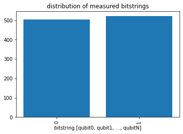
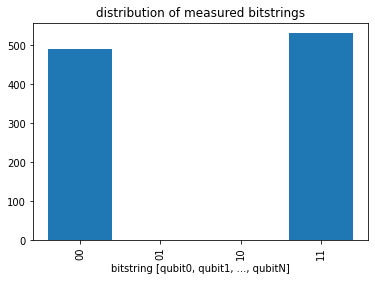
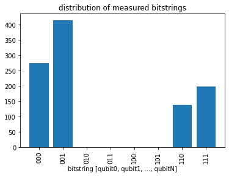
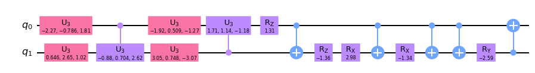

Setup#
[1]:
print('Installing torchquantum...')
!git clone https://github.com/mit-han-lab/torchquantum.git
%cd /content/torchquantum
!pip install --editable . 1>/dev/null
!pip install matplotlib==3.1.3 1>/dev/null
%matplotlib inline
print('All required packages have been successfully installed!')
Installing torchquantum...
Cloning into 'torchquantum'...
remote: Enumerating objects: 11836, done.
remote: Counting objects: 100% (726/726), done.
remote: Compressing objects: 100% (306/306), done.
remote: Total 11836 (delta 435), reused 685 (delta 405), pack-reused 11110
Receiving objects: 100% (11836/11836), 33.59 MiB | 25.33 MiB/s, done.
Resolving deltas: 100% (6593/6593), done.
/content/torchquantum
ERROR: pip's dependency resolver does not currently take into account all the packages that are installed. This behaviour is the source of the following dependency conflicts.
torchquantum 0.1.2 requires matplotlib>=3.3.2, but you have matplotlib 3.1.3 which is incompatible.
All required packages have been successfully installed!
[2]:
import torchquantum as tq
import torchquantum.functional as tqf
import numpy as np
import matplotlib.pyplot as plt
import torch
1. TorchQuantum basic operations#
1.2 TorchQuantum Operations#
tq.QuantumDevice Usage
Method 1 of using quantum gates through torchquantum.functional
[16]:
q_dev = tq.QuantumDevice(n_wires=1)
q_dev.reset_states(bsz=1)
print(f"all zero state: {q_dev}")
tqf.h(q_dev, wires=0)
print(f"after h gate: {q_dev}")
tqf.rx(q_dev, wires=0, params=[0.3])
print(f"after rx gate: {q_dev}")
all zero state: QuantumDevice 1 wires with states: tensor([[1.+0.j, 0.+0.j]])
after h gate: QuantumDevice 1 wires with states: tensor([[0.7071+0.j, 0.7071+0.j]])
after rx gate: QuantumDevice 1 wires with states: tensor([[0.6992-0.1057j, 0.6992-0.1057j]])
[19]:
# method 2 of using tq.Operator
q_dev.reset_states(bsz=1)
print(f"all zero state: {q_dev}")
h_gate = tq.H()
h_gate(q_dev, wires=0)
print(f"after h gate: {q_dev}")
rx_gate = tq.RX(has_params=True, init_params=[0.3])
rx_gate(q_dev, wires=0)
print(f"after rx gate: {q_dev}")
bitstring = tq.measure(q_dev, n_shots=1024, draw_id=0)
print(bitstring)
all zero state: QuantumDevice 1 wires with states: tensor([[1.+0.j, 0.+0.j]])
after h gate: QuantumDevice 1 wires with states: tensor([[0.7071+0.j, 0.7071+0.j]])
after rx gate: QuantumDevice 1 wires with states: tensor([[0.6992-0.1057j, 0.6992-0.1057j]])

[OrderedDict([('0', 503), ('1', 521)])]
[20]:
# tq.QuantumState to prepare a EPR pair
q_state = tq.QuantumState(n_wires=2)
q_state.h(wires=0)
q_state.cnot(wires=[0, 1])
print(q_state)
bitstring = tq.measure(q_state, n_shots=1024, draw_id=0)
print(bitstring)
QuantumState 2 wires
state: tensor([[0.7071+0.j, 0.0000+0.j, 0.0000+0.j, 0.7071+0.j]])

[OrderedDict([('00', 492), ('01', 0), ('10', 0), ('11', 532)])]
[21]:
# tq.QuantumState
q_state = tq.QuantumState(n_wires=3)
q_state.x(wires=1)
q_state.rx(wires=2, params=0.6 * np.pi)
print(q_state)
q_state.ry(wires=0, params=0.3 * np.pi)
q_state.qubitunitary(wires=1, params=[[0, 1j], [-1j, 0]])
q_state.cnot(wires=[0, 1])
print(q_state)
bitstring = tq.measure(q_state, n_shots=1024, draw_id=0)
print(bitstring)
QuantumState 3 wires
state: tensor([[0.0000+0.0000j, 0.0000+0.0000j, 0.5878+0.0000j, 0.0000-0.8090j,
0.0000+0.0000j, 0.0000+0.0000j, 0.0000+0.0000j, 0.0000+0.0000j]])
QuantumState 3 wires
state: tensor([[0.0000+0.5237j, 0.7208+0.0000j, 0.0000+0.0000j, 0.0000+0.0000j,
0.0000+0.0000j, 0.0000+0.0000j, 0.0000+0.2668j, 0.3673+0.0000j]])

[OrderedDict([('000', 273), ('001', 415), ('010', 0), ('011', 0), ('100', 0), ('101', 0), ('110', 138), ('111', 198)])]
Batch mode process different states
[22]:
# batch mode processing
q_state = tq.QuantumState(n_wires=3, bsz=64)
q_state.x(wires=1)
q_state.rx(wires=2, params=0.6 * np.pi)
print(q_state)
QuantumState 3 wires
state: tensor([[0.0000+0.0000j, 0.0000+0.0000j, 0.5878+0.0000j, 0.0000-0.8090j,
0.0000+0.0000j, 0.0000+0.0000j, 0.0000+0.0000j, 0.0000+0.0000j],
[0.0000+0.0000j, 0.0000+0.0000j, 0.5878+0.0000j, 0.0000-0.8090j,
0.0000+0.0000j, 0.0000+0.0000j, 0.0000+0.0000j, 0.0000+0.0000j],
[0.0000+0.0000j, 0.0000+0.0000j, 0.5878+0.0000j, 0.0000-0.8090j,
0.0000+0.0000j, 0.0000+0.0000j, 0.0000+0.0000j, 0.0000+0.0000j],
[0.0000+0.0000j, 0.0000+0.0000j, 0.5878+0.0000j, 0.0000-0.8090j,
0.0000+0.0000j, 0.0000+0.0000j, 0.0000+0.0000j, 0.0000+0.0000j],
[0.0000+0.0000j, 0.0000+0.0000j, 0.5878+0.0000j, 0.0000-0.8090j,
0.0000+0.0000j, 0.0000+0.0000j, 0.0000+0.0000j, 0.0000+0.0000j],
[0.0000+0.0000j, 0.0000+0.0000j, 0.5878+0.0000j, 0.0000-0.8090j,
0.0000+0.0000j, 0.0000+0.0000j, 0.0000+0.0000j, 0.0000+0.0000j],
[0.0000+0.0000j, 0.0000+0.0000j, 0.5878+0.0000j, 0.0000-0.8090j,
0.0000+0.0000j, 0.0000+0.0000j, 0.0000+0.0000j, 0.0000+0.0000j],
[0.0000+0.0000j, 0.0000+0.0000j, 0.5878+0.0000j, 0.0000-0.8090j,
0.0000+0.0000j, 0.0000+0.0000j, 0.0000+0.0000j, 0.0000+0.0000j],
[0.0000+0.0000j, 0.0000+0.0000j, 0.5878+0.0000j, 0.0000-0.8090j,
0.0000+0.0000j, 0.0000+0.0000j, 0.0000+0.0000j, 0.0000+0.0000j],
[0.0000+0.0000j, 0.0000+0.0000j, 0.5878+0.0000j, 0.0000-0.8090j,
0.0000+0.0000j, 0.0000+0.0000j, 0.0000+0.0000j, 0.0000+0.0000j],
[0.0000+0.0000j, 0.0000+0.0000j, 0.5878+0.0000j, 0.0000-0.8090j,
0.0000+0.0000j, 0.0000+0.0000j, 0.0000+0.0000j, 0.0000+0.0000j],
[0.0000+0.0000j, 0.0000+0.0000j, 0.5878+0.0000j, 0.0000-0.8090j,
0.0000+0.0000j, 0.0000+0.0000j, 0.0000+0.0000j, 0.0000+0.0000j],
[0.0000+0.0000j, 0.0000+0.0000j, 0.5878+0.0000j, 0.0000-0.8090j,
0.0000+0.0000j, 0.0000+0.0000j, 0.0000+0.0000j, 0.0000+0.0000j],
[0.0000+0.0000j, 0.0000+0.0000j, 0.5878+0.0000j, 0.0000-0.8090j,
0.0000+0.0000j, 0.0000+0.0000j, 0.0000+0.0000j, 0.0000+0.0000j],
[0.0000+0.0000j, 0.0000+0.0000j, 0.5878+0.0000j, 0.0000-0.8090j,
0.0000+0.0000j, 0.0000+0.0000j, 0.0000+0.0000j, 0.0000+0.0000j],
[0.0000+0.0000j, 0.0000+0.0000j, 0.5878+0.0000j, 0.0000-0.8090j,
0.0000+0.0000j, 0.0000+0.0000j, 0.0000+0.0000j, 0.0000+0.0000j],
[0.0000+0.0000j, 0.0000+0.0000j, 0.5878+0.0000j, 0.0000-0.8090j,
0.0000+0.0000j, 0.0000+0.0000j, 0.0000+0.0000j, 0.0000+0.0000j],
[0.0000+0.0000j, 0.0000+0.0000j, 0.5878+0.0000j, 0.0000-0.8090j,
0.0000+0.0000j, 0.0000+0.0000j, 0.0000+0.0000j, 0.0000+0.0000j],
[0.0000+0.0000j, 0.0000+0.0000j, 0.5878+0.0000j, 0.0000-0.8090j,
0.0000+0.0000j, 0.0000+0.0000j, 0.0000+0.0000j, 0.0000+0.0000j],
[0.0000+0.0000j, 0.0000+0.0000j, 0.5878+0.0000j, 0.0000-0.8090j,
0.0000+0.0000j, 0.0000+0.0000j, 0.0000+0.0000j, 0.0000+0.0000j],
[0.0000+0.0000j, 0.0000+0.0000j, 0.5878+0.0000j, 0.0000-0.8090j,
0.0000+0.0000j, 0.0000+0.0000j, 0.0000+0.0000j, 0.0000+0.0000j],
[0.0000+0.0000j, 0.0000+0.0000j, 0.5878+0.0000j, 0.0000-0.8090j,
0.0000+0.0000j, 0.0000+0.0000j, 0.0000+0.0000j, 0.0000+0.0000j],
[0.0000+0.0000j, 0.0000+0.0000j, 0.5878+0.0000j, 0.0000-0.8090j,
0.0000+0.0000j, 0.0000+0.0000j, 0.0000+0.0000j, 0.0000+0.0000j],
[0.0000+0.0000j, 0.0000+0.0000j, 0.5878+0.0000j, 0.0000-0.8090j,
0.0000+0.0000j, 0.0000+0.0000j, 0.0000+0.0000j, 0.0000+0.0000j],
[0.0000+0.0000j, 0.0000+0.0000j, 0.5878+0.0000j, 0.0000-0.8090j,
0.0000+0.0000j, 0.0000+0.0000j, 0.0000+0.0000j, 0.0000+0.0000j],
[0.0000+0.0000j, 0.0000+0.0000j, 0.5878+0.0000j, 0.0000-0.8090j,
0.0000+0.0000j, 0.0000+0.0000j, 0.0000+0.0000j, 0.0000+0.0000j],
[0.0000+0.0000j, 0.0000+0.0000j, 0.5878+0.0000j, 0.0000-0.8090j,
0.0000+0.0000j, 0.0000+0.0000j, 0.0000+0.0000j, 0.0000+0.0000j],
[0.0000+0.0000j, 0.0000+0.0000j, 0.5878+0.0000j, 0.0000-0.8090j,
0.0000+0.0000j, 0.0000+0.0000j, 0.0000+0.0000j, 0.0000+0.0000j],
[0.0000+0.0000j, 0.0000+0.0000j, 0.5878+0.0000j, 0.0000-0.8090j,
0.0000+0.0000j, 0.0000+0.0000j, 0.0000+0.0000j, 0.0000+0.0000j],
[0.0000+0.0000j, 0.0000+0.0000j, 0.5878+0.0000j, 0.0000-0.8090j,
0.0000+0.0000j, 0.0000+0.0000j, 0.0000+0.0000j, 0.0000+0.0000j],
[0.0000+0.0000j, 0.0000+0.0000j, 0.5878+0.0000j, 0.0000-0.8090j,
0.0000+0.0000j, 0.0000+0.0000j, 0.0000+0.0000j, 0.0000+0.0000j],
[0.0000+0.0000j, 0.0000+0.0000j, 0.5878+0.0000j, 0.0000-0.8090j,
0.0000+0.0000j, 0.0000+0.0000j, 0.0000+0.0000j, 0.0000+0.0000j],
[0.0000+0.0000j, 0.0000+0.0000j, 0.5878+0.0000j, 0.0000-0.8090j,
0.0000+0.0000j, 0.0000+0.0000j, 0.0000+0.0000j, 0.0000+0.0000j],
[0.0000+0.0000j, 0.0000+0.0000j, 0.5878+0.0000j, 0.0000-0.8090j,
0.0000+0.0000j, 0.0000+0.0000j, 0.0000+0.0000j, 0.0000+0.0000j],
[0.0000+0.0000j, 0.0000+0.0000j, 0.5878+0.0000j, 0.0000-0.8090j,
0.0000+0.0000j, 0.0000+0.0000j, 0.0000+0.0000j, 0.0000+0.0000j],
[0.0000+0.0000j, 0.0000+0.0000j, 0.5878+0.0000j, 0.0000-0.8090j,
0.0000+0.0000j, 0.0000+0.0000j, 0.0000+0.0000j, 0.0000+0.0000j],
[0.0000+0.0000j, 0.0000+0.0000j, 0.5878+0.0000j, 0.0000-0.8090j,
0.0000+0.0000j, 0.0000+0.0000j, 0.0000+0.0000j, 0.0000+0.0000j],
[0.0000+0.0000j, 0.0000+0.0000j, 0.5878+0.0000j, 0.0000-0.8090j,
0.0000+0.0000j, 0.0000+0.0000j, 0.0000+0.0000j, 0.0000+0.0000j],
[0.0000+0.0000j, 0.0000+0.0000j, 0.5878+0.0000j, 0.0000-0.8090j,
0.0000+0.0000j, 0.0000+0.0000j, 0.0000+0.0000j, 0.0000+0.0000j],
[0.0000+0.0000j, 0.0000+0.0000j, 0.5878+0.0000j, 0.0000-0.8090j,
0.0000+0.0000j, 0.0000+0.0000j, 0.0000+0.0000j, 0.0000+0.0000j],
[0.0000+0.0000j, 0.0000+0.0000j, 0.5878+0.0000j, 0.0000-0.8090j,
0.0000+0.0000j, 0.0000+0.0000j, 0.0000+0.0000j, 0.0000+0.0000j],
[0.0000+0.0000j, 0.0000+0.0000j, 0.5878+0.0000j, 0.0000-0.8090j,
0.0000+0.0000j, 0.0000+0.0000j, 0.0000+0.0000j, 0.0000+0.0000j],
[0.0000+0.0000j, 0.0000+0.0000j, 0.5878+0.0000j, 0.0000-0.8090j,
0.0000+0.0000j, 0.0000+0.0000j, 0.0000+0.0000j, 0.0000+0.0000j],
[0.0000+0.0000j, 0.0000+0.0000j, 0.5878+0.0000j, 0.0000-0.8090j,
0.0000+0.0000j, 0.0000+0.0000j, 0.0000+0.0000j, 0.0000+0.0000j],
[0.0000+0.0000j, 0.0000+0.0000j, 0.5878+0.0000j, 0.0000-0.8090j,
0.0000+0.0000j, 0.0000+0.0000j, 0.0000+0.0000j, 0.0000+0.0000j],
[0.0000+0.0000j, 0.0000+0.0000j, 0.5878+0.0000j, 0.0000-0.8090j,
0.0000+0.0000j, 0.0000+0.0000j, 0.0000+0.0000j, 0.0000+0.0000j],
[0.0000+0.0000j, 0.0000+0.0000j, 0.5878+0.0000j, 0.0000-0.8090j,
0.0000+0.0000j, 0.0000+0.0000j, 0.0000+0.0000j, 0.0000+0.0000j],
[0.0000+0.0000j, 0.0000+0.0000j, 0.5878+0.0000j, 0.0000-0.8090j,
0.0000+0.0000j, 0.0000+0.0000j, 0.0000+0.0000j, 0.0000+0.0000j],
[0.0000+0.0000j, 0.0000+0.0000j, 0.5878+0.0000j, 0.0000-0.8090j,
0.0000+0.0000j, 0.0000+0.0000j, 0.0000+0.0000j, 0.0000+0.0000j],
[0.0000+0.0000j, 0.0000+0.0000j, 0.5878+0.0000j, 0.0000-0.8090j,
0.0000+0.0000j, 0.0000+0.0000j, 0.0000+0.0000j, 0.0000+0.0000j],
[0.0000+0.0000j, 0.0000+0.0000j, 0.5878+0.0000j, 0.0000-0.8090j,
0.0000+0.0000j, 0.0000+0.0000j, 0.0000+0.0000j, 0.0000+0.0000j],
[0.0000+0.0000j, 0.0000+0.0000j, 0.5878+0.0000j, 0.0000-0.8090j,
0.0000+0.0000j, 0.0000+0.0000j, 0.0000+0.0000j, 0.0000+0.0000j],
[0.0000+0.0000j, 0.0000+0.0000j, 0.5878+0.0000j, 0.0000-0.8090j,
0.0000+0.0000j, 0.0000+0.0000j, 0.0000+0.0000j, 0.0000+0.0000j],
[0.0000+0.0000j, 0.0000+0.0000j, 0.5878+0.0000j, 0.0000-0.8090j,
0.0000+0.0000j, 0.0000+0.0000j, 0.0000+0.0000j, 0.0000+0.0000j],
[0.0000+0.0000j, 0.0000+0.0000j, 0.5878+0.0000j, 0.0000-0.8090j,
0.0000+0.0000j, 0.0000+0.0000j, 0.0000+0.0000j, 0.0000+0.0000j],
[0.0000+0.0000j, 0.0000+0.0000j, 0.5878+0.0000j, 0.0000-0.8090j,
0.0000+0.0000j, 0.0000+0.0000j, 0.0000+0.0000j, 0.0000+0.0000j],
[0.0000+0.0000j, 0.0000+0.0000j, 0.5878+0.0000j, 0.0000-0.8090j,
0.0000+0.0000j, 0.0000+0.0000j, 0.0000+0.0000j, 0.0000+0.0000j],
[0.0000+0.0000j, 0.0000+0.0000j, 0.5878+0.0000j, 0.0000-0.8090j,
0.0000+0.0000j, 0.0000+0.0000j, 0.0000+0.0000j, 0.0000+0.0000j],
[0.0000+0.0000j, 0.0000+0.0000j, 0.5878+0.0000j, 0.0000-0.8090j,
0.0000+0.0000j, 0.0000+0.0000j, 0.0000+0.0000j, 0.0000+0.0000j],
[0.0000+0.0000j, 0.0000+0.0000j, 0.5878+0.0000j, 0.0000-0.8090j,
0.0000+0.0000j, 0.0000+0.0000j, 0.0000+0.0000j, 0.0000+0.0000j],
[0.0000+0.0000j, 0.0000+0.0000j, 0.5878+0.0000j, 0.0000-0.8090j,
0.0000+0.0000j, 0.0000+0.0000j, 0.0000+0.0000j, 0.0000+0.0000j],
[0.0000+0.0000j, 0.0000+0.0000j, 0.5878+0.0000j, 0.0000-0.8090j,
0.0000+0.0000j, 0.0000+0.0000j, 0.0000+0.0000j, 0.0000+0.0000j],
[0.0000+0.0000j, 0.0000+0.0000j, 0.5878+0.0000j, 0.0000-0.8090j,
0.0000+0.0000j, 0.0000+0.0000j, 0.0000+0.0000j, 0.0000+0.0000j],
[0.0000+0.0000j, 0.0000+0.0000j, 0.5878+0.0000j, 0.0000-0.8090j,
0.0000+0.0000j, 0.0000+0.0000j, 0.0000+0.0000j, 0.0000+0.0000j]])
[23]:
q_state = tq.QuantumState(n_wires=2)
print(q_state)
q_state.set_states(torch.tensor([[0, 0, 1, 0], [0, 1, 0, 0]]))
print(q_state)
q_state.x(wires=0)
print(q_state)
QuantumState 2 wires
state: tensor([[1.+0.j, 0.+0.j, 0.+0.j, 0.+0.j]])
QuantumState 2 wires
state: tensor([[0.+0.j, 0.+0.j, 1.+0.j, 0.+0.j],
[0.+0.j, 1.+0.j, 0.+0.j, 0.+0.j]])
QuantumState 2 wires
state: tensor([[1.+0.j, 0.+0.j, 0.+0.j, 0.+0.j],
[0.+0.j, 0.+0.j, 0.+0.j, 1.+0.j]])
/content/torchquantum/torchquantum/states.py:47: UserWarning: To copy construct from a tensor, it is recommended to use sourceTensor.clone().detach() or sourceTensor.clone().detach().requires_grad_(True), rather than torch.tensor(sourceTensor).
states = torch.tensor(states, dtype=C_DTYPE).to(self.state.device)
[ ]:
# demonstrate the GPU processing
n_qubits = 10
bsz = 8
run_iters = 5
use_gpu = False
q_state = tq.QuantumState(n_wires=n_qubits, bsz=bsz)
if use_gpu:
q_state.to(torch.device('cuda'))
# start = time.time()
start = torch.cuda.Event(enable_timing=True)
end = torch.cuda.Event(enable_timing=True)
start.record()
for k in range(run_iters):
print(k)
for qid in range(n_qubits):
q_state.rx(qid, params=np.random.rand())
q_state.cnot(wires=[qid, (qid+1) % n_qubits])
end.record()
torch.cuda.synchronize()
print(f"Use GPU: {use_gpu}, avg runtime for circuit with {n_qubits} qubits, {2*n_qubits} gates, {bsz} batch size is {start.elapsed_time(end) / run_iters / 1000:.2f} second")
[3]:
# automatic gradient computation
q_state = tq.QuantumState(n_wires=2)
q_state._states.requires_grad = True
q_state.x(wires=0)
q_state.rx(wires=1, params=0.6 * np.pi)
print(q_state)
target_quantum_state = torch.tensor([0, 0, 0, 1], dtype=torch.complex64)
loss = 1 - (q_state.get_states_1d()[0] @ target_quantum_state).abs()
print(loss)
loss.backward()
print(q_state._states.grad)
QuantumState 2 wires
state: tensor([[0.0000+0.0000j, 0.0000+0.0000j, 0.5878+0.0000j, 0.0000-0.8090j]],
grad_fn=<UnsafeViewBackward0>)
tensor(0.1910, grad_fn=<RsubBackward1>)
tensor([[[-0.8090+0.0000j, 0.0000+0.5878j],
[ 0.0000+0.0000j, 0.0000+0.0000j]]])
[4]:
# build a circuit
class QModel(tq.QuantumModule):
def __init__(self):
super().__init__()
self.n_wires = 2
self.u3_0 = tq.U3(has_params=True, trainable=True)
self.u3_1 = tq.U3(has_params=True, trainable=True)
self.cu3_0 = tq.CU3(has_params=True, trainable=True)
self.cu3_1 = tq.CU3(has_params=True, trainable=True)
self.u3_2 = tq.U3(has_params=True, trainable=True)
self.u3_3 = tq.U3(has_params=True, trainable=True)
self.random_layer = tq.RandomLayer(n_ops=10,
wires=list(range(self.n_wires)))
def forward(self, q_device: tq.QuantumDevice):
self.u3_0(q_device, wires=0)
self.u3_1(q_device, wires=1)
self.cu3_0(q_device, wires=[0, 1])
self.u3_2(q_device, wires=0)
self.u3_3(q_device, wires=1)
self.cu3_1(q_device, wires=[1, 0])
self.random_layer(q_device)
q_dev = tq.QuantumDevice(n_wires=2)
q_dev.reset_states(bsz=3)
print(q_dev)
model = QModel()
model(q_dev)
print(q_dev)
QuantumDevice 2 wires with states: tensor([[1.+0.j, 0.+0.j, 0.+0.j, 0.+0.j],
[1.+0.j, 0.+0.j, 0.+0.j, 0.+0.j],
[1.+0.j, 0.+0.j, 0.+0.j, 0.+0.j]])
QuantumDevice 2 wires with states: tensor([[ 0.1543-0.2309j, 0.2192-0.5838j, -0.4387-0.5519j, -0.0495+0.1859j],
[ 0.1543-0.2309j, 0.2192-0.5838j, -0.4387-0.5519j, -0.0495+0.1859j],
[ 0.1543-0.2309j, 0.2192-0.5838j, -0.4387-0.5519j, -0.0495+0.1859j]],
grad_fn=<UnsafeViewBackward0>)
[5]:
# easy conversion to qiskit
from torchquantum.plugin.qiskit_plugin import tq2qiskit
circ = tq2qiskit(q_dev, model)
circ.draw('mpl')
[5]:

[ ]:
#
[3]:
! pip install pennylane
Looking in indexes: https://pypi.org/simple, https://us-python.pkg.dev/colab-wheels/public/simple/
Collecting pennylane
Downloading PennyLane-0.25.1-py3-none-any.whl (1.0 MB)
|████████████████████████████████| 1.0 MB 35.4 MB/s
Requirement already satisfied: appdirs in /usr/local/lib/python3.7/dist-packages (from pennylane) (1.4.4)
Requirement already satisfied: autograd in /usr/local/lib/python3.7/dist-packages (from pennylane) (1.4)
Requirement already satisfied: scipy in /usr/local/lib/python3.7/dist-packages (from pennylane) (1.7.3)
Requirement already satisfied: cachetools in /usr/local/lib/python3.7/dist-packages (from pennylane) (4.2.4)
Requirement already satisfied: toml in /usr/local/lib/python3.7/dist-packages (from pennylane) (0.10.2)
Requirement already satisfied: networkx in /usr/local/lib/python3.7/dist-packages (from pennylane) (2.6.3)
Collecting pennylane-lightning>=0.25
Downloading PennyLane_Lightning-0.25.1-cp37-cp37m-manylinux_2_17_x86_64.manylinux2014_x86_64.whl (13.6 MB)
|████████████████████████████████| 13.6 MB 29.3 MB/s
Requirement already satisfied: numpy in /usr/local/lib/python3.7/dist-packages (from pennylane) (1.21.6)
Collecting semantic-version>=2.7
Downloading semantic_version-2.10.0-py2.py3-none-any.whl (15 kB)
Collecting autoray>=0.3.1
Downloading autoray-0.3.2-py3-none-any.whl (36 kB)
Requirement already satisfied: retworkx in /usr/local/lib/python3.7/dist-packages (from pennylane) (0.11.0)
Collecting ninja
Downloading ninja-1.10.2.3-py2.py3-none-manylinux_2_5_x86_64.manylinux1_x86_64.whl (108 kB)
|████████████████████████████████| 108 kB 68.7 MB/s
Requirement already satisfied: future>=0.15.2 in /usr/local/lib/python3.7/dist-packages (from autograd->pennylane) (0.16.0)
Installing collected packages: ninja, semantic-version, pennylane-lightning, autoray, pennylane
Successfully installed autoray-0.3.2 ninja-1.10.2.3 pennylane-0.25.1 pennylane-lightning-0.25.1 semantic-version-2.10.0
[12]:
# Speed comparison with pennylane
import pennylane as qml
from pennylane import numpy as np
import random
import time
[18]:
n_wires = 10
bsz = 32
use_gpu=False
[19]:
dev=qml.device("default.qubit",wires=n_wires)
@qml.qnode(dev,interface="torch")
def pennylane_circ(params):
qml.Rot(params[0],params[1],params[2],wires=0)
qml.Rot(params[3],params[4],params[5],wires=1)
qml.ctrl(qml.Rot,control=0)(params[6],params[7],params[8],wires=1)
qml.Rot(params[9],params[10],params[11],wires=0)
qml.Rot(params[12],params[13],params[14],wires=1)
qml.ctrl(qml.Rot,control=1)(params[15],params[16],params[17],wires=0)
return qml.state()
if use_gpu:
device = torch.device('cuda')
else:
device = torch.device('cpu')
params=np.zeros(18)
reps = 20
start = time.time()
for _ in range(reps):
for k in range(bsz):
pennylane_circ(params)
end = time.time()
pennylane_time = (end-start)/reps
print(f"Pennylane inference time: {pennylane_time}")
Pennylane inference time: 0.3734148144721985
[20]:
reps = 1000
'''
Circuit definition in torchquantum
'''
class QModel(tq.QuantumModule):
def __init__(self, bsz, n_wires):
super().__init__()
self.bsz = bsz
self.n_wires = n_wires
self.u3_0 = tq.U3(has_params=True, trainable=True)
self.u3_1 = tq.U3(has_params=True, trainable=True)
self.cu3_0 = tq.CU3(has_params=True, trainable=True)
self.cu3_1 = tq.CU3(has_params=True, trainable=True)
self.u3_2 = tq.U3(has_params=True, trainable=True)
self.u3_3 = tq.U3(has_params=True, trainable=True)
def forward(self, q_device: tq.QuantumDevice):
q_device.reset_states(self.bsz)
self.u3_0(q_device, wires=0)
self.u3_1(q_device, wires=1)
self.cu3_0(q_device, wires=[0, 1])
self.u3_2(q_device, wires=0)
self.u3_3(q_device, wires=1)
self.cu3_1(q_device, wires=[1, 0])
tq_circ = QModel(n_wires=n_wires, bsz=bsz).to(device)
q_device = tq.QuantumDevice(n_wires=n_wires)
start = time.time()
for _ in range(reps):
tq_circ(q_device)
end = time.time()
tq_time = (end-start)/reps
print(f"TorchQuantum inference time {tq_time}; is {pennylane_time/tq_time} X faster")
TorchQuantum inference time 0.004048892259597778; is 92.22641417218001 X faster
[26]:
# basic pulse
pulse = tq.QuantumPulseDirect(n_steps=4,
hamil=[[0, 1], [1, 0]])
pulse.get_unitary()
[26]:
tensor([[-0.6536+0.0000j, 0.0000+0.7568j],
[ 0.0000+0.7568j, -0.6536+0.0000j]], grad_fn=<MmBackward0>)
[28]:
theta = 0.6 * np.pi
target_unitary = torch.tensor([[np.cos(theta/2), -1j*np.sin(theta/2)], [-1j*np.sin(theta/2), np.cos(theta/2)]], dtype=torch.complex64)
loss = 1 - (torch.trace(pulse.get_unitary() @ target_unitary) / target_unitary.shape[0]).abs() ** 2
loss.backward()
print(pulse.pulse_shape.grad)
tensor([-0.4441, -0.4441, -0.4441, -0.4441])
1.3 TorchQuantum for state preparation circuit#
[7]:
import torch
import torch.optim as optim
import argparse
import torchquantum as tq
from torch.optim.lr_scheduler import CosineAnnealingLR
import random
import numpy as np
[8]:
class QModel(tq.QuantumModule):
def __init__(self):
super().__init__()
self.n_wires = 2
self.u3_0 = tq.U3(has_params=True, trainable=True)
self.u3_1 = tq.U3(has_params=True, trainable=True)
self.cu3_0 = tq.CU3(has_params=True, trainable=True)
self.cu3_1 = tq.CU3(has_params=True, trainable=True)
self.u3_2 = tq.U3(has_params=True, trainable=True)
self.u3_3 = tq.U3(has_params=True, trainable=True)
def forward(self, q_state: tq.QuantumState):
q_state.reset_states(1)
self.u3_0(q_state, wires=0)
self.u3_1(q_state, wires=1)
self.cu3_0(q_state, wires=[0, 1])
self.u3_2(q_state, wires=0)
self.u3_3(q_state, wires=1)
self.cu3_1(q_state, wires=[1, 0])
def train(target_state, state, model, optimizer):
model(state)
result_state = state.get_states_1d()[0]
# compute the state infidelity
loss = 1 - torch.dot(result_state, target_state).abs() ** 2
optimizer.zero_grad()
loss.backward()
optimizer.step()
print(f"infidelity (loss): {loss.item()}, \n target state : "
f"{target_state.detach().cpu().numpy()}, \n "
f"result state : {result_state.detach().cpu().numpy()}\n")
[35]:
def main(n_epochs=3000):
seed = 42
random.seed(seed)
np.random.seed(seed)
torch.manual_seed(seed)
use_cuda = torch.cuda.is_available()
device = torch.device("cuda" if use_cuda else "cpu")
model = QModel().to(device)
optimizer = optim.Adam(model.parameters(), lr=1e-2, weight_decay=0)
scheduler = CosineAnnealingLR(optimizer, T_max=n_epochs)
q_device = tq.QuantumState(n_wires=2)
target_state = torch.tensor([0, 1, 0, 0], dtype=torch.complex64)
for epoch in range(1, n_epochs + 1):
print(f"Epoch {epoch}, LR: {optimizer.param_groups[0]['lr']}")
train(target_state, q_device, model, optimizer)
scheduler.step()
[ ]:
main(n_epochs=3000)
1.4 TorchQuantum for VQE circuit#
[10]:
! wget https://www.dropbox.com/s/1rtttfxoo02s09e/h2_new.txt
--2022-09-19 15:25:09-- https://www.dropbox.com/s/1rtttfxoo02s09e/h2_new.txt
Resolving www.dropbox.com (www.dropbox.com)... 162.125.65.18, 2620:100:6017:18::a27d:212
Connecting to www.dropbox.com (www.dropbox.com)|162.125.65.18|:443... connected.
HTTP request sent, awaiting response... 302 Found
Location: /s/raw/1rtttfxoo02s09e/h2_new.txt [following]
--2022-09-19 15:25:10-- https://www.dropbox.com/s/raw/1rtttfxoo02s09e/h2_new.txt
Reusing existing connection to www.dropbox.com:443.
HTTP request sent, awaiting response... 302 Found
Location: https://ucfcd04121af2228bb42634017f1.dl.dropboxusercontent.com/cd/0/inline/BtNQ0j4Qw_P3NDqdfHMScfqMtF5UMizmFhmybBzezDMfQxVT-6XxJ8L4v68idx990zBZGgjFv_daTOhOCPhY7HqN47VGL7WU3mzIkkumskCkzELS-C8msPgRwrGbBLvst8KeznexC4Dk4dfyqQyM9YOjytB_H_HBaSmwsn9xn-VSGg/file# [following]
--2022-09-19 15:25:10-- https://ucfcd04121af2228bb42634017f1.dl.dropboxusercontent.com/cd/0/inline/BtNQ0j4Qw_P3NDqdfHMScfqMtF5UMizmFhmybBzezDMfQxVT-6XxJ8L4v68idx990zBZGgjFv_daTOhOCPhY7HqN47VGL7WU3mzIkkumskCkzELS-C8msPgRwrGbBLvst8KeznexC4Dk4dfyqQyM9YOjytB_H_HBaSmwsn9xn-VSGg/file
Resolving ucfcd04121af2228bb42634017f1.dl.dropboxusercontent.com (ucfcd04121af2228bb42634017f1.dl.dropboxusercontent.com)... 162.125.3.15, 2620:100:6017:15::a27d:20f
Connecting to ucfcd04121af2228bb42634017f1.dl.dropboxusercontent.com (ucfcd04121af2228bb42634017f1.dl.dropboxusercontent.com)|162.125.3.15|:443... connected.
HTTP request sent, awaiting response... 200 OK
Length: 139 [text/plain]
Saving to: ‘h2_new.txt’
h2_new.txt 100%[===================>] 139 --.-KB/s in 0s
2022-09-19 15:25:11 (26.7 MB/s) - ‘h2_new.txt’ saved [139/139]
[4]:
import torchquantum as tq
import torch
import torch.nn.functional as F
from torchquantum.vqe_utils import parse_hamiltonian_file
from torchquantum.datasets import VQE
import random
import numpy as np
import argparse
import torch.optim as optim
from torch.optim.lr_scheduler import CosineAnnealingLR, ConstantLR
[11]:
class QVQEModel(tq.QuantumModule):
def __init__(self, arch, hamil_info):
super().__init__()
self.arch = arch
self.hamil_info = hamil_info
self.n_wires = hamil_info['n_wires']
self.n_blocks = arch['n_blocks']
self.u3_layers = tq.QuantumModuleList()
self.cu3_layers = tq.QuantumModuleList()
for _ in range(self.n_blocks):
self.u3_layers.append(tq.Op1QAllLayer(op=tq.U3,
n_wires=self.n_wires,
has_params=True,
trainable=True,
))
self.cu3_layers.append(tq.Op2QAllLayer(op=tq.CU3,
n_wires=self.n_wires,
has_params=True,
trainable=True,
circular=True
))
self.measure = tq.MeasureMultipleTimes(
obs_list=hamil_info['hamil_list'])
def forward(self, q_device):
q_device.reset_states(bsz=1)
for k in range(self.n_blocks):
self.u3_layers[k](q_device)
self.cu3_layers[k](q_device)
x = self.measure(q_device)
hamil_coefficients = torch.tensor([hamil['coefficient'] for hamil in
self.hamil_info['hamil_list']],
device=x.device).double()
for k, hamil in enumerate(self.hamil_info['hamil_list']):
for wire, observable in zip(hamil['wires'], hamil['observables']):
if observable == 'i':
x[k][wire] = 1
for wire in range(q_device.n_wires):
if wire not in hamil['wires']:
x[k][wire] = 1
x = torch.cumprod(x, dim=-1)[:, -1].double()
x = torch.dot(x, hamil_coefficients)
if x.dim() == 0:
x = x.unsqueeze(0)
return x
def train(dataflow, q_device, model, device, optimizer):
for _ in dataflow['train']:
outputs = model(q_device)
loss = outputs.mean()
optimizer.zero_grad()
loss.backward()
optimizer.step()
print(f"Expectation of energy: {loss.item()}")
def valid_test(dataflow, q_device, split, model, device):
with torch.no_grad():
for _ in dataflow[split]:
outputs = model(q_device)
loss = outputs.mean()
print(f"Expectation of energy: {loss}")
[14]:
class Args(object):
def __init__(self):
pass
def main():
# parser = argparse.ArgumentParser()
# parser.add_argument('--pdb', action='store_true', help='debug with pdb')
# parser.add_argument('--n_blocks', type=int, default=2,
# help='number of blocks, each contain one layer of '
# 'U3 gates and one layer of CU3 with '
# 'ring connections')
# parser.add_argument('--steps_per_epoch', type=int, default=10,
# help='number of training epochs')
# parser.add_argument('--epochs', type=int, default=100,
# help='number of training epochs')
# parser.add_argument('--hamil_filename', type=str, default='./h2_new.txt',
# help='number of training epochs')
args = Args()
args.n_blocks = 2
args.steps_per_epoch=100
args.epochs=100
args.hamil_filename = '/content/torchquantum/h2_new.txt'
# if args.pdb:
# import pdb
# pdb.set_trace()
seed = 0
random.seed(seed)
np.random.seed(seed)
torch.manual_seed(seed)
dataset = VQE(steps_per_epoch=args.steps_per_epoch)
dataflow = dict()
for split in dataset:
if split == 'train':
sampler = torch.utils.data.RandomSampler(dataset[split])
else:
sampler = torch.utils.data.SequentialSampler(dataset[split])
dataflow[split] = torch.utils.data.DataLoader(
dataset[split],
batch_size=1,
sampler=sampler,
num_workers=1,
pin_memory=True)
hamil_info = parse_hamiltonian_file(args.hamil_filename)
use_cuda = torch.cuda.is_available()
device = torch.device("cuda" if use_cuda else "cpu")
model = QVQEModel(arch={"n_blocks": args.n_blocks},
hamil_info=hamil_info)
model.to(device)
n_epochs = args.epochs
optimizer = optim.Adam(model.parameters(), lr=5e-3, weight_decay=1e-4)
scheduler = CosineAnnealingLR(optimizer, T_max=n_epochs)
q_device = tq.QuantumDevice(n_wires=hamil_info['n_wires'])
q_device.reset_states(bsz=1)
for epoch in range(1, n_epochs + 1):
# train
print(f"Epoch {epoch}, LR: {optimizer.param_groups[0]['lr']}")
train(dataflow, q_device, model, device, optimizer)
# valid
valid_test(dataflow, q_device, 'valid', model, device)
scheduler.step()
# final valid
valid_test(dataflow, q_device, 'valid', model, device)
[15]:
main()
Epoch 1, LR: 0.005
Expectation of energy: -0.308297323072801
Expectation of energy: -0.3150710661499416
Expectation of energy: -0.3222581990990716
Expectation of energy: -0.3298538992153188
Expectation of energy: -0.3378549958850836
Expectation of energy: -0.3462580818360128
Expectation of energy: -0.35506080617605584
Expectation of energy: -0.3642611309815864
Expectation of energy: -0.37385944604789345
Expectation of energy: -0.3838581631128637
Expectation of energy: -0.39426284856410665
Expectation of energy: -0.40508255287436734
Expectation of energy: -0.41632968098560474
Expectation of energy: -0.4280217907429371
Expectation of energy: -0.4401789326278298
Expectation of energy: -0.4528248988932262
Expectation of energy: -0.4659814090349086
Expectation of energy: -0.4796671753594215
Expectation of energy: -0.49389354536284613
Expectation of energy: -0.5086673454400741
Expectation of energy: -0.5239896705033897
Expectation of energy: -0.5398575345128833
Expectation of energy: -0.5562654188755087
Expectation of energy: -0.5732025354929666
Expectation of energy: -0.5906582814303059
Expectation of energy: -0.6086202753284728
Expectation of energy: -0.6270759125807044
Expectation of energy: -0.6460131499584596
Expectation of energy: -0.6654197248861027
Expectation of energy: -0.6852816790901917
Expectation of energy: -0.7055832865251654
Expectation of energy: -0.726304925766776
Expectation of energy: -0.7474252975601621
Expectation of energy: -0.7689180912762086
Expectation of energy: -0.7907567045661701
Expectation of energy: -0.8129120128083609
Expectation of energy: -0.835353362605799
Expectation of energy: -0.8580469167888662
Expectation of energy: -0.880957539042001
Expectation of energy: -0.904049305753527
Expectation of energy: -0.9272828409789278
Expectation of energy: -0.9506195169472338
Expectation of energy: -0.9740194497956998
Expectation of energy: -0.997441343767171
Expectation of energy: -1.02084374128577
Expectation of energy: -1.044184479376973
Expectation of energy: -1.0674212651913764
Expectation of energy: -1.0905136089809482
Expectation of energy: -1.1134209261619075
Expectation of energy: -1.1361055443887715
Expectation of energy: -1.1585309511002313
Expectation of energy: -1.180663069118116
Expectation of energy: -1.2024708840223917
Expectation of energy: -1.2239266828663689
Expectation of energy: -1.2450046695668322
Expectation of energy: -1.2656832661683326
Expectation of energy: -1.2859423163229518
Expectation of energy: -1.305764713513226
Expectation of energy: -1.3251346780127407
Expectation of energy: -1.3440385075139858
Expectation of energy: -1.3624633073585322
Expectation of energy: -1.3803982401215706
Expectation of energy: -1.3978330414034656
Expectation of energy: -1.4147587108826005
Expectation of energy: -1.4311684817015302
Expectation of energy: -1.4470565159801254
Expectation of energy: -1.4624191672379407
Expectation of energy: -1.4772557899128564
Expectation of energy: -1.491566312061463
Expectation of energy: -1.5053538021332036
Expectation of energy: -1.518623216448085
Expectation of energy: -1.5313816111045064
Expectation of energy: -1.543637582764402
Expectation of energy: -1.5554010688327917
Expectation of energy: -1.566683542253599
Expectation of energy: -1.577497960326701
Expectation of energy: -1.58785648515607
Expectation of energy: -1.5977735926623289
Expectation of energy: -1.6072629639575209
Expectation of energy: -1.6163387675503167
Expectation of energy: -1.6250154649982833
Expectation of energy: -1.6333083096243592
Expectation of energy: -1.641231861539749
Expectation of energy: -1.6488010623233564
Expectation of energy: -1.6560317510167233
Expectation of energy: -1.6629380850645679
Expectation of energy: -1.6695359678676125
Expectation of energy: -1.6758402260292533
Expectation of energy: -1.6818649964748809
Expectation of energy: -1.6876251155377096
Expectation of energy: -1.6931347620651545
Expectation of energy: -1.6984065362320644
Expectation of energy: -1.7034537412957578
Expectation of energy: -1.7082888786232986
Expectation of energy: -1.712923466852262
Expectation of energy: -1.7173688625873273
Expectation of energy: -1.721636092546762
Expectation of energy: -1.7257351333265731
Expectation of energy: -1.7296762987476333
Expectation of energy: -1.7334682116242563
Expectation of energy: -1.7371199700047164
Epoch 2, LR: 0.0049987664009143295
Expectation of energy: -1.7371199700047164
Expectation of energy: -1.7406386912828493
Expectation of energy: -1.7440335320517497
Expectation of energy: -1.7473111102056609
Expectation of energy: -1.7504782222782216
Expectation of energy: -1.7535412787390154
Expectation of energy: -1.7565058968835403
Expectation of energy: -1.759377074174433
Expectation of energy: -1.7621601697925975
Expectation of energy: -1.7648592241832979
Expectation of energy: -1.767479029402394
Expectation of energy: -1.7700228962512232
Expectation of energy: -1.7724949221862025
Expectation of energy: -1.7748978987552877
Expectation of energy: -1.7772350746150434
Expectation of energy: -1.7795094983733064
Expectation of energy: -1.7817232498377027
Expectation of energy: -1.7838785571014317
Expectation of energy: -1.7859782904080883
Expectation of energy: -1.7880235033033915
Expectation of energy: -1.7900170050286142
Expectation of energy: -1.7919597975826154
Expectation of energy: -1.7938537272504917
Expectation of energy: -1.7957003241548335
Expectation of energy: -1.797500955558857
Expectation of energy: -1.7992573516104649
Expectation of energy: -1.8009698268775123
Expectation of energy: -1.8026405103866445
Expectation of energy: -1.804269877594594
Expectation of energy: -1.8058594881338932
Expectation of energy: -1.8074098600566129
Expectation of energy: -1.8089226514277743
Expectation of energy: -1.810398198739981
Expectation of energy: -1.8118380108759542
Expectation of energy: -1.8132425321819088
Expectation of energy: -1.814613142876332
Expectation of energy: -1.8159501233090745
Expectation of energy: -1.8172551329175004
Expectation of energy: -1.81852813868538
Expectation of energy: -1.8197706051011815
Expectation of energy: -1.8209829790204506
Expectation of energy: -1.822166207271819
Expectation of energy: -1.823321290024784
Expectation of energy: -1.8244487293863783
Expectation of energy: -1.825549328783198
Expectation of energy: -1.826623644407344
Expectation of energy: -1.827672846005034
Expectation of energy: -1.8286970344156346
Expectation of energy: -1.8296970745633039
Expectation of energy: -1.8306736130123746
Expectation of energy: -1.8316279059184533
Expectation of energy: -1.8325600031308331
Expectation of energy: -1.8334701107569
Expectation of energy: -1.8343597108248098
Expectation of energy: -1.835228860710742
Expectation of energy: -1.8360780770628609
Expectation of energy: -1.8369080639366242
Expectation of energy: -1.8377194101268466
Expectation of energy: -1.8385121571643477
Expectation of energy: -1.839287746366928
Expectation of energy: -1.8400452195649581
Expectation of energy: -1.8407862108857265
Expectation of energy: -1.8415108212650382
Expectation of energy: -1.8422191268123873
Expectation of energy: -1.842912218641005
Expectation of energy: -1.843589837129386
Expectation of energy: -1.8442525461550558
Expectation of energy: -1.8449012251925572
Expectation of energy: -1.8455352366198263
Expectation of energy: -1.8461557895161853
Expectation of energy: -1.8467627958509403
Expectation of energy: -1.8473564416067503
Expectation of energy: -1.8479375633844264
Expectation of energy: -1.8485057965199916
Expectation of energy: -1.8490621453479181
Expectation of energy: -1.8496065068888792
Expectation of energy: -1.8501391349165532
Expectation of energy: -1.850660377615957
Expectation of energy: -1.8511703488993607
Expectation of energy: -1.8516692967983088
Expectation of energy: -1.8521575221191722
Expectation of energy: -1.852635510121204
Expectation of energy: -1.8531035138774734
Expectation of energy: -1.8535609310452
Expectation of energy: -1.8540091911125138
Expectation of energy: -1.854447580289549
Expectation of energy: -1.8548766488154402
Expectation of energy: -1.8552966706316276
Expectation of energy: -1.8557072927267524
Expectation of energy: -1.8561093597275444
Expectation of energy: -1.8565031928483973
Expectation of energy: -1.8568882184730278
Expectation of energy: -1.8572652794722904
Expectation of energy: -1.8576336223059016
Expectation of energy: -1.857994803989237
Expectation of energy: -1.8583482620165608
Expectation of energy: -1.8586940939268743
Expectation of energy: -1.8590323445415504
Expectation of energy: -1.8593632780779858
Expectation of energy: -1.8596873680752544
Expectation of energy: -1.8600042583654561
Epoch 3, LR: 0.00499506682107068
Expectation of energy: -1.8600042583654561
Expectation of energy: -1.8603142172677518
Expectation of energy: -1.860617707234636
Expectation of energy: -1.8609146078146557
Expectation of energy: -1.8612047972227
Expectation of energy: -1.861489111623201
Expectation of energy: -1.8617669604698208
Expectation of energy: -1.8620390353977796
Expectation of energy: -1.8623051691146995
Expectation of energy: -1.862565688347211
Expectation of energy: -1.8628202542502552
Expectation of energy: -1.8630695684233585
Expectation of energy: -1.8633132516951922
Expectation of energy: -1.8635518523975556
Expectation of energy: -1.8637851993068324
Expectation of energy: -1.8640135702935257
Expectation of energy: -1.8642365658098885
Expectation of energy: -1.8644549037971103
Expectation of energy: -1.8646687229796104
Expectation of energy: -1.864877684421353
Expectation of energy: -1.8650817248095304
Expectation of energy: -1.8652815026994112
Expectation of energy: -1.8654769467233923
Expectation of energy: -1.8656678268330742
Expectation of energy: -1.8658546957856224
Expectation of energy: -1.8660376180907576
Expectation of energy: -1.866216213133451
Expectation of energy: -1.866390751170692
Expectation of energy: -1.8665617093688085
Expectation of energy: -1.86672876160534
Expectation of energy: -1.8668919349778421
Expectation of energy: -1.8670513010336973
Expectation of energy: -1.8672075259416876
Expectation of energy: -1.8673598074301596
Expectation of energy: -1.867508964918732
Expectation of energy: -1.8676544929727523
Expectation of energy: -1.8677965953155866
Expectation of energy: -1.8679359598789396
Expectation of energy: -1.8680717979680017
Expectation of energy: -1.8682042940612478
Expectation of energy: -1.8683345937557774
Expectation of energy: -1.8684613316493213
Expectation of energy: -1.8685852106391083
Expectation of energy: -1.868706061337477
Expectation of energy: -1.8688243485956573
Expectation of energy: -1.8689398058035107
Expectation of energy: -1.8690525834900675
Expectation of energy: -1.8691624684803183
Expectation of energy: -1.869270188715714
Expectation of energy: -1.869375385808313
Expectation of energy: -1.8694779908720567
Expectation of energy: -1.8695781291362437
Expectation of energy: -1.8696761419427235
Expectation of energy: -1.8697714187081478
Expectation of energy: -1.8698645602351573
Expectation of energy: -1.8699556702287476
Expectation of energy: -1.8700443964500817
Expectation of energy: -1.8701308651455928
Expectation of energy: -1.8702161275244586
Expectation of energy: -1.870298457945267
Expectation of energy: -1.8703787897589728
Expectation of energy: -1.8704577178424848
Expectation of energy: -1.8705343695584336
Expectation of energy: -1.870609235947981
Expectation of energy: -1.8706823050632249
Expectation of energy: -1.8707531503177026
Expectation of energy: -1.8708231370286865
Expectation of energy: -1.870890831030976
Expectation of energy: -1.8709570938094435
Expectation of energy: -1.8710214026011474
Expectation of energy: -1.8710843600539504
---------------------------------------------------------------------------
KeyboardInterrupt Traceback (most recent call last)
<ipython-input-15-263240bbee7e> in <module>
----> 1 main()
<ipython-input-14-ee35acbb01d2> in main()
67 # train
68 print(f"Epoch {epoch}, LR: {optimizer.param_groups[0]['lr']}")
---> 69 train(dataflow, q_device, model, device, optimizer)
70
71 # valid
<ipython-input-11-8bc26e701b2e> in train(dataflow, q_device, model, device, optimizer)
57
58 optimizer.zero_grad()
---> 59 loss.backward()
60 optimizer.step()
61 print(f"Expectation of energy: {loss.item()}")
/usr/local/lib/python3.7/dist-packages/torch/_tensor.py in backward(self, gradient, retain_graph, create_graph, inputs)
394 create_graph=create_graph,
395 inputs=inputs)
--> 396 torch.autograd.backward(self, gradient, retain_graph, create_graph, inputs=inputs)
397
398 def register_hook(self, hook):
/usr/local/lib/python3.7/dist-packages/torch/autograd/__init__.py in backward(tensors, grad_tensors, retain_graph, create_graph, grad_variables, inputs)
173 Variable._execution_engine.run_backward( # Calls into the C++ engine to run the backward pass
174 tensors, grad_tensors_, retain_graph, create_graph, inputs,
--> 175 allow_unreachable=True, accumulate_grad=True) # Calls into the C++ engine to run the backward pass
176
177 def grad(
KeyboardInterrupt:
1.5 TorchQuantum for QNN circuit#
[47]:
import torch
import torch.nn.functional as F
import torch.optim as optim
import argparse
import torchquantum as tq
import torchquantum.functional as tqf
from torchquantum.plugin import (tq2qiskit_expand_params,
tq2qiskit,
tq2qiskit_measurement,
qiskit_assemble_circs)
from torchquantum.datasets import MNIST
from torch.optim.lr_scheduler import CosineAnnealingLR
import random
import numpy as np
[49]:
class QFCModel(tq.QuantumModule):
class QLayer(tq.QuantumModule):
def __init__(self):
super().__init__()
self.n_wires = 4
self.random_layer = tq.RandomLayer(n_ops=50,
wires=list(range(self.n_wires)))
# gates with trainable parameters
self.rx0 = tq.RX(has_params=True, trainable=True)
self.ry0 = tq.RY(has_params=True, trainable=True)
self.rz0 = tq.RZ(has_params=True, trainable=True)
self.crx0 = tq.CRX(has_params=True, trainable=True)
@tq.static_support
def forward(self, q_device: tq.QuantumDevice):
"""
1. To convert tq QuantumModule to qiskit or run in the static
model, need to:
(1) add @tq.static_support before the forward
(2) make sure to add
static=self.static_mode and
parent_graph=self.graph
to all the tqf functions, such as tqf.hadamard below
"""
self.q_device = q_device
self.random_layer(self.q_device)
# some trainable gates (instantiated ahead of time)
self.rx0(self.q_device, wires=0)
self.ry0(self.q_device, wires=1)
self.rz0(self.q_device, wires=3)
self.crx0(self.q_device, wires=[0, 2])
# add some more non-parameterized gates (add on-the-fly)
tqf.hadamard(self.q_device, wires=3, static=self.static_mode,
parent_graph=self.graph)
tqf.sx(self.q_device, wires=2, static=self.static_mode,
parent_graph=self.graph)
tqf.cnot(self.q_device, wires=[3, 0], static=self.static_mode,
parent_graph=self.graph)
tqf.rx(self.q_device, wires=1, params=torch.tensor([0.1]),
static=self.static_mode, parent_graph=self.graph)
def __init__(self):
super().__init__()
self.n_wires = 4
self.q_device = tq.QuantumDevice(n_wires=self.n_wires)
self.encoder = tq.GeneralEncoder(
tq.encoder_op_list_name_dict['4x4_ryzxy'])
self.q_layer = self.QLayer()
self.measure = tq.MeasureAll(tq.PauliZ)
def forward(self, x, use_qiskit=False):
bsz = x.shape[0]
x = F.avg_pool2d(x, 6).view(bsz, 16)
devi = x.device
if use_qiskit:
encoder_circs = tq2qiskit_expand_params(self.q_device, x,
self.encoder.func_list)
q_layer_circ = tq2qiskit(self.q_device, self.q_layer)
measurement_circ = tq2qiskit_measurement(self.q_device,
self.measure)
assembled_circs = qiskit_assemble_circs(encoder_circs,
q_layer_circ,
measurement_circ)
x0 = self.qiskit_processor.process_ready_circs(
self.q_device, assembled_circs).to(devi)
# x1 = self.qiskit_processor.process_parameterized(
# self.q_device, self.encoder, self.q_layer, self.measure, x)
# print((x0-x1).max())
x = x0
else:
self.encoder(self.q_device, x)
self.q_layer(self.q_device)
x = self.measure(self.q_device)
x = x.reshape(bsz, 2, 2).sum(-1).squeeze()
x = F.log_softmax(x, dim=1)
return x
def train(dataflow, model, device, optimizer):
for feed_dict in dataflow['train']:
inputs = feed_dict['image'].to(device)
targets = feed_dict['digit'].to(device)
outputs = model(inputs)
loss = F.nll_loss(outputs, targets)
optimizer.zero_grad()
loss.backward()
optimizer.step()
print(f"loss: {loss.item()}", end='\r')
def valid_test(dataflow, split, model, device, qiskit=False):
target_all = []
output_all = []
with torch.no_grad():
for feed_dict in dataflow[split]:
inputs = feed_dict['image'].to(device)
targets = feed_dict['digit'].to(device)
outputs = model(inputs, use_qiskit=qiskit)
target_all.append(targets)
output_all.append(outputs)
target_all = torch.cat(target_all, dim=0)
output_all = torch.cat(output_all, dim=0)
_, indices = output_all.topk(1, dim=1)
masks = indices.eq(target_all.view(-1, 1).expand_as(indices))
size = target_all.shape[0]
corrects = masks.sum().item()
accuracy = corrects / size
loss = F.nll_loss(output_all, target_all).item()
print(f"{split} set accuracy: {accuracy}")
print(f"{split} set loss: {loss}")
[52]:
def main():
# parser = argparse.ArgumentParser()
# parser.add_argument('--static', action='store_true', help='compute with '
# 'static mode')
# parser.add_argument('--pdb', action='store_true', help='debug with pdb')
# parser.add_argument('--wires-per-block', type=int, default=2,
# help='wires per block int static mode')
# parser.add_argument('--epochs', type=int, default=5,
# help='number of training epochs')
# args = parser.parse_args()
# if args.pdb:
# import pdb
# pdb.set_trace()
n_epochs = 5
seed = 0
random.seed(seed)
np.random.seed(seed)
torch.manual_seed(seed)
dataset = MNIST(
root='./mnist_data',
train_valid_split_ratio=[0.9, 0.1],
digits_of_interest=[3, 6],
n_test_samples=75,
)
dataflow = dict()
for split in dataset:
sampler = torch.utils.data.RandomSampler(dataset[split])
dataflow[split] = torch.utils.data.DataLoader(
dataset[split],
batch_size=256,
sampler=sampler,
num_workers=8,
pin_memory=True)
use_cuda = torch.cuda.is_available()
device = torch.device("cuda" if use_cuda else "cpu")
model = QFCModel().to(device)
optimizer = optim.Adam(model.parameters(), lr=5e-3, weight_decay=1e-4)
scheduler = CosineAnnealingLR(optimizer, T_max=n_epochs)
for epoch in range(1, n_epochs + 1):
# train
print(f"Epoch {epoch}:")
train(dataflow, model, device, optimizer)
print(optimizer.param_groups[0]['lr'])
# valid
valid_test(dataflow, 'valid', model, device)
scheduler.step()
# test
valid_test(dataflow, 'test', model, device, qiskit=False)
# run on Qiskit simulator and real Quantum Computers
try:
from qiskit import IBMQ
from torchquantum.plugin import QiskitProcessor
# firstly perform simulate
print(f"\nTest with Qiskit Simulator")
processor_simulation = QiskitProcessor(use_real_qc=False)
model.set_qiskit_processor(processor_simulation)
valid_test(dataflow, 'test', model, device, qiskit=True)
# then try to run on REAL QC
backend_name = 'ibmq_lima'
print(f"\nTest on Real Quantum Computer {backend_name}")
# Please specify your own hub group and project if you have the
# IBMQ premium plan to access more machines.
processor_real_qc = QiskitProcessor(use_real_qc=True,
backend_name=backend_name,
hub='ibm-q',
group='open',
project='main',
)
model.set_qiskit_processor(processor_real_qc)
valid_test(dataflow, 'test', model, device, qiskit=True)
except ImportError:
print("Please install qiskit, create an IBM Q Experience Account and "
"save the account token according to the instruction at "
"'https://github.com/Qiskit/qiskit-ibmq-provider', "
"then try again.")
[53]:
main()
[2022-09-18 05:29:24.683] Only use the front 75 images as TEST set.
Epoch 1:
0.005
valid set accuracy: 0.700414937759336
valid set loss: 0.6310521364212036
Epoch 2:
---------------------------------------------------------------------------
KeyboardInterrupt Traceback (most recent call last)
<ipython-input-53-263240bbee7e> in <module>
----> 1 main()
<ipython-input-52-c815ef425ce3> in main()
49 # train
50 print(f"Epoch {epoch}:")
---> 51 train(dataflow, model, device, optimizer)
52 print(optimizer.param_groups[0]['lr'])
53
<ipython-input-49-7f3a43b36b13> in train(dataflow, model, device, optimizer)
91 targets = feed_dict['digit'].to(device)
92
---> 93 outputs = model(inputs)
94 loss = F.nll_loss(outputs, targets)
95 optimizer.zero_grad()
/usr/local/lib/python3.7/dist-packages/torch/nn/modules/module.py in _call_impl(self, *input, **kwargs)
1128 if not (self._backward_hooks or self._forward_hooks or self._forward_pre_hooks or _global_backward_hooks
1129 or _global_forward_hooks or _global_forward_pre_hooks):
-> 1130 return forward_call(*input, **kwargs)
1131 # Do not call functions when jit is used
1132 full_backward_hooks, non_full_backward_hooks = [], []
<ipython-input-49-7f3a43b36b13> in forward(self, x, use_qiskit)
76
77 else:
---> 78 self.encoder(self.q_device, x)
79 self.q_layer(self.q_device)
80 x = self.measure(self.q_device)
/usr/local/lib/python3.7/dist-packages/torch/nn/modules/module.py in _call_impl(self, *input, **kwargs)
1128 if not (self._backward_hooks or self._forward_hooks or self._forward_pre_hooks or _global_backward_hooks
1129 or _global_forward_hooks or _global_forward_pre_hooks):
-> 1130 return forward_call(*input, **kwargs)
1131 # Do not call functions when jit is used
1132 full_backward_hooks, non_full_backward_hooks = [], []
/content/torchquantum/torchquantum/graph.py in forward_register_graph(*args, **kwargs)
23 if args[0].static_mode and args[0].parent_graph is not None:
24 args[0].parent_graph.add_op(args[0])
---> 25 res = f(*args, **kwargs)
26 if args[0].static_mode and args[0].is_graph_top:
27 # finish build graph, set flag
/content/torchquantum/torchquantum/encoding.py in forward(self, q_device, x)
69 params=params,
70 static=self.static_mode,
---> 71 parent_graph=self.graph
72 )
73
/content/torchquantum/torchquantum/functional.py in ry(q_device, wires, params, n_wires, static, parent_graph, inverse, comp_method)
1685 static=static,
1686 parent_graph=parent_graph,
-> 1687 inverse=inverse
1688 )
1689
/content/torchquantum/torchquantum/functional.py in gate_wrapper(name, mat, method, q_device, wires, params, n_wires, static, parent_graph, inverse)
260 name in ['qubitunitary', 'qubitunitaryfast',
261 'qubitunitarystrict']:
--> 262 matrix = mat(params)
263 elif name in ['multicnot', 'multixcnot']:
264 # this is for gates that can be applied to arbitrary numbers of
/content/torchquantum/torchquantum/functional.py in ry_matrix(params)
354 theta = params.type(C_DTYPE)
355
--> 356 co = torch.cos(theta / 2)
357 si = torch.sin(theta / 2)
358
KeyboardInterrupt:
[ ]: